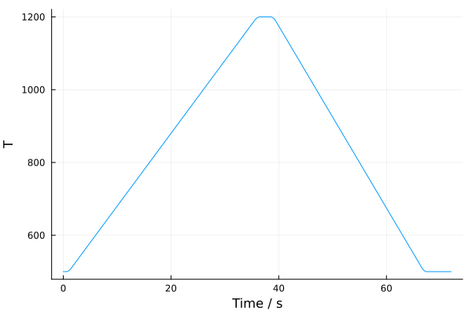

ODE Solution
Kinetic simulations of generated CRNs are a key part of the Kinetica workflow. Aside from enabling computational insight into long-timescale chemical degradation processes through integration of species concentrations with time, they also allow for directed exploration of chemical reaction space (see Iterative CRN Exploration).
As such, the efficiency of these simulations is paramount within Kinetica. Aside from building the infrastructure for these simulations on top of extensible, performant Julia packages such as Catalyst.jl, ModelingToolkit.jl and DifferentialEquations.jl, we implement a number of optimisations that make repeated long-timescale simulations possible.
Kinetic Simulation Basics
Within Kinetica, what we refer to as a 'kinetic simulation' broadly consists of 3 steps:
- A calculator setup stage, where the chosen kinetic calculator (see section on Kinetic Calculators for further information) is prepared to calculate rate constants on the given CRN.
- Conversion of a Kinetica CRN into a system of ODEs that can be integrated with time by the selected ODE solver.
- Integration of species concentrations over the selected timespan. Depending on how the simulation is formulated, this may include simulataneous integration of experimental conditions and reaction rate constants with time.
This tutorial will focus on steps 2-3, as Kinetica presents many methods of creating symbolic systems of ODEs and integrating them with time which can be more or less effective given the simulation problem at hand.
In order to demonstrate how these methods work, we start by considering a simple CRN:
\[A \underset{k_{-1}}{\stackrel{k_1}{\rightleftharpoons}} B + C \\ B \underset{k_{-2}}{\stackrel{k_2}{\rightleftharpoons}} D \\ C + D \underset{k_{-3}}{\stackrel{k_3}{\rightleftharpoons}} E\]
where $A$, $B$, $C$, $D$ and $E$ are chemical species, and $k_1$, $k_{-1}$ etc. are forward and reverse rate constants for the 3 reactions connecting them.
Assuming these rate constants are static parameters for the duration of a kinetic simulation, Catalyst.jl can be used to convert this CRN into a symbolic ModelingToolkit.jl ODESystem containing the following ODEs:
\[\begin{split} \frac{\mathrm{d} A\left( t \right)}{\mathrm{d}t} & = - k_1 A\left( t \right) + k_{- 1} B\left( t \right) C\left( t \right) \\ \frac{\mathrm{d} B\left( t \right)}{\mathrm{d}t} & = k_1 A\left( t \right) + k_{- 2} D\left( t \right) - k_2 B\left( t \right) - k_{- 1} B\left( t \right) C\left( t \right) \\ \frac{\mathrm{d} C\left( t \right)}{\mathrm{d}t} & = k_1 A\left( t \right) + k_{- 3} E\left( t \right) - k_{- 1} B\left( t \right) C\left( t \right) - k_3 C\left( t \right) D\left( t \right) \\ \frac{\mathrm{d} D\left( t \right)}{\mathrm{d}t} & = k_2 B\left( t \right) + k_{- 3} E\left( t \right) - k_{- 2} D\left( t \right) - k_3 C\left( t \right) D\left( t \right) \\ \frac{\mathrm{d} E\left( t \right)}{\mathrm{d}t} & = - k_{- 3} E\left( t \right) + k_3 C\left( t \right) D\left( t \right) \end{split}\]
This ODESystem can be passed to DifferentialEquations.jl to be integrated over a given timespan. For many CRNs under static experimental conditions, this process is made simple by these packages.
However, when experimental conditions need to vary - almost a certainty over long real-world timescales - this process becomes more difficult as reaction rate constants must also vary with these experimental conditions. The rate constants in the above system of ODEs therefore become symbolic variables rather than parameters and the variable conditions must also be included, forming a much larger system of differential algebraic equations (DAEs):
\[\begin{split} \frac{\mathrm{d} A\left( t \right)}{\mathrm{d}t} & = - k_1\left( T \right) A\left( t \right) + k_{- 1}\left( T \right) B\left( t \right) C\left( t \right) \\ \frac{\mathrm{d} B\left( t \right)}{\mathrm{d}t} & = k_1\left( T \right) A\left( t \right) + k_{- 2}\left( T \right) D\left( t \right) - k_2\left( T \right) B\left( t \right) - k_{- 1}\left( T \right) B\left( t \right) C\left( t \right) \\ \frac{\mathrm{d} C\left( t \right)}{\mathrm{d}t} & = k_1\left( T \right) A\left( t \right) + k_{- 3}\left( T \right) E\left( t \right) - k_{- 1}\left( T \right) B\left( t \right) C\left( t \right) - k_3\left( T \right) C\left( t \right) D\left( t \right) \\ \frac{\mathrm{d} D\left( t \right)}{\mathrm{d}t} & = k_2\left( T \right) B\left( t \right) + k_{- 3}\left( T \right) E\left( t \right) - k_{- 2}\left( T \right) D\left( t \right) - k_3\left( T \right) C\left( t \right) D\left( t \right) \\ \frac{\mathrm{d} E\left( t \right)}{\mathrm{d}t} & = - k_{- 3}\left( T \right) E\left( t \right) + k_3\left( T \right) C\left( t \right) D\left( t \right) \\ \frac{\mathrm{d} T\left( t \right)}{\mathrm{d}t} & = \texttt{get\_profile(conditions, :T)} \\ \frac{\mathrm{d} P\left( t \right)}{\mathrm{d}t} & = \texttt{get\_profile(conditions, :P)} \\ k_1\left( T \right) & = A_{1} \exp\left [ -\frac{E_{a, 1}}{k_{B}T\left(t\right)} \right ] \\ k_{-1}\left( T \right) & = A_{-1} \exp\left [ -\frac{E_{a, -1}}{k_{B}T\left(t\right)} \right ] \\ k_2\left( T \right) & = A_{2} \exp\left [ -\frac{E_{a, 2}}{k_{B}T\left(t\right)} \right ] \\ k_{-2}\left( T \right) & = A_{-2} \exp\left [ -\frac{E_{a, -2}}{k_{B}T\left(t\right)} \right ] \\ k_3\left( T \right) & = A_{3} \exp\left [ -\frac{E_{a, 3}}{k_{B}T\left(t\right)} \right ] \\ k_{-3}\left( T \right) & = A_{-3} \exp\left [ -\frac{E_{a, -3}}{k_{B}T\left(t\right)} \right ] \\ \end{split}\]
This system of DAEs is computationally challenging to solve, so we convert it back to an ODESystem by substituting the expressions for the variable rate constants back into each species' ODE. For example, the ODE for the concentration of species $A$ becomes:
\[\frac{\mathrm{d} A\left( t \right)}{\mathrm{d}t} = - A_{1} \exp\left [ -\frac{E_{a, 1}}{k_{B}T\left(t\right)} \right ] A\left( t \right) + A_{-1} \exp\left [ -\frac{E_{a, -1}}{k_{B}T\left(t\right)} \right ] B\left( t \right) C\left( t \right)\]
With the full ODESystem expanded in this way, ModelingToolkit can be used to create a sparse analytic Jacobian and a CRN can be quickly and efficiently integrated with time under variable experimental conditions. This represents what Kinetica calls (for reasons that will become apparrent soon) the complete-time continuously variable rate constant method of kinetic simulation.
Chunkwise Simulation
Tackling long-timescale simulations with the approach above presents an interesting challenge. When reactions are occurring very quickly (under high temperatures and/or high pressures, for example) and rate constants are very large, ODE solvers capable of adaptive timestepping usually reduce their timesteps to correctly resolve the changes in species concentrations. Within short-timescale simulations where the length of the simulation is only a few orders of magnitude higher than these rate constants, there are no problems. However once we move to longer-timescale simulations, we run into floating point underflow.
More specifically, once a timestep is complete, the solver adds the timestep to the global simulation time (GST). If the timestep is so small in comparison to the GST that addition to it does not change the GST, underflow occurs. We therefore recommend enabling chunkwise simulations within Kinetica.
This is a technique that splits the global simulation timescale into local chunks of time, each of length $\tau_c$ (set by ODESimulationParams.solve_chunkstep). By running back-to-back short simulations where local simulation time (LST) underflow is guaranteed not to occur and accumulating GST separately, we can avoid any underflow and not have to rely on extended precision operations.
Chunkwise-time kinetic simulations are enabled/disabled within the ODESimulationParams parameter block. For further discussion on implementation and necessity, see the section on Implemetation Details - Chunkwise Time.
Discretely Variable Kinetics
While the continuously variable rate constant method of kinetic simulation (both in its complete-time and chunkwise-time forms) works for small CRNs, the computational cost of substituting variable rate constants into the ODESystem and creating a sparse analytical Jacobian of the expanded system scales poorly with CRN size. Imagine the system of ODEs needed to describe a CRN with hundreds of species and thousands of reactions, each with their own expanded rate constant!
The continuous formalism is also limited in the range of rate constants that can be used. Since each rate constant must be mathematically embedded within the ODEs it occurs in, rate constants must be expressible purely as functions of experimental conditions (i.e. a quantity that can go in a ConditionSet), with any other quantities precalculated and compiled into these functions during ODESystem compilation. This limits both the level of theory and the level of computation that can occur, as more complicated rate expressions and rate constant calculations based on external programs cannot be used.
Kinetica includes a discrete approximation to continuously variable rate constants that can circumvent both of these issues. It does this by only compiling a cheap static kinetic ODESystem (i.e. one where each rate constant is a single numeric parameter rather than a variable expression) and precalculating all values of the rate constant at times separated by a rate update timestep $\tau_r$. During kinetic simulation, Kinetica discretely updates every rate constant at every $\tau_r$ along the GST using DifferentialEquations' callback library. By setting a small enough $\tau_r$, the continuous formalism result can be recovered.
The discretely variable rate constant method of kinetic simulation has been shown to produce results that are almost indistinguishable from the continuous formalism, while achieving significantly faster compilation and even speeding up ODE solution (see the original Kinetica paper). It is also compatible with the chunkwise time simulations described above, allowing for fast and flexible long-timescale simulations of very large CRNs.
Unlike chunkwise simulations, this method is not enabled within the main ODESimulationParams block - instead, it is activated by setting the ts_update keyword argument when constructing a simulation's ConditionSet. This is because each variable condition profile has to know when rate constant updates are going to happen in advance so it can intelligently create arrays of time points to update rate constants at, only where a profile is actually varying. This avoids unnecessary rate constant updates to maintain simulation efficiency. For more information, see the tutorial on Arbitrary Simulation Conditions.
Method Summary
Depending on the input parameters used, there are currently 6 methods of the solve_network function that can be triggered. These are outlined below:
| Kinetics | Timestepping | Rate Updates | Enabled By | Uses |
|---|---|---|---|---|
| Static | Complete | N/A |
|
Very short-timescale simulations where conditions are constant |
| Static | Chunkwise | N/A |
|
Long-timescale and/or high-rate simulations where conditions are constant |
| Variable | Complete | Continuous |
|
Repeated short-timescale simulations of small CRNs under variable conditions |
| Variable | Complete | Discrete |
|
Single short-timescale simulations of large CRNs under variable conditions |
| Variable | Chunkwise | Continuous |
|
Repeated long-timescale simulations of small CRNs under variable conditions |
| Variable | Chunkwise | Discrete |
|
Single long-timescale simulations of small CRNs under variable conditions |
It may be desirable to perform ensemble simulations on a CRN (e.g. with slightly different rate constants). In some cases, the increased compilation cost of the continuous rate update method may be preferable if the CRN being simulated is solved faster with this method than the discrete rate update method, as the CRN may only have to be compiled once and can then be rerun many times. While the underlying DifferentialEquations integrator object can be returned by calling solve_network with return_integrator=true, ensemble calculations are not currently implemented by Kinetica and this exercise is left up to the user. For most other calculations, the discrete rate update method should always be preferred.
Running Kinetic Simulations
In Getting Started, we demonstrated an example workflow for generating a CRN and running a kinetic simulation on it by creating a number of parameter blocks and passing them to the explore_network function. While this is useful for CRNs that are being explored, kinetic simulations can also be performed independently of exploration, e.g. when a CRN has already been explored.
Parameters
As with the original tutorial, running a kinetic simulation will require an ODESimulationParams parameter block (see the Solving API page for full documentation). As noted in Getting Started, the first 3 parameters of this block are essential to any kinetic simulation, while the rest have default values and are optional. Nevertheless, these optional parameters are of vital importance to the performance and efficiency of many kinetic simulations:
do_jac and do_sparse
These parameters tell ModelingToolkit whether to generate a symbolic analytical Jacobian and automatically detect its sparsity pattern. Enabling these options (default) can significantly speed up kinetic simulations by eliminating the solver's use of numerical derivatives and allowing for sparse matrix operations. See the ModelingToolkit documentation for more information.
abstol and reltol
These control the absolute/relative tolerances of the ODE solver. These can be reduced to increase the accuracy of the resulting solution at the cost of solution time, as more timesteps will be taken.
adaptive_tols and update_tols
These control Kinetica's adaptive solver tolerance optimisation. See the section on Implementation Details - Adaptive Solver Tolerance for more information.
solve_chunks and solve_chunkstep
These control Kinetica's chunkwise ODE solution optimisation. See the section above on Chunkwise Simulation for more information.
maxiters
This parameter allows for more ODE solver iterations to be used when required. This sometimes needs to be increased when performing very long timescale simulations with challenging (high rate) experimental conditions that require many timesteps.
ban_negatives
Enabling this forces the ODE solver to reject steps when any species concentrations fall below zero. In most cases, reducing solver tolerances to increase solution accuracy should be preferred.
progress
Enabling this allows for showing a progress bar during ODE solution. See the tutorial on Logging for more details.
save_interval
This allows for controlling how often the ODE solver saves species concentrations. While this defaults to saving species concentrations at every timestep (save_interval=nothing), this can lead to high memory consumption and disk space usage during/after long-timescale simulations where many timesteps are taken.
While saving species concentrations at every timestep may be possible within short simulations of small CRNs, save_interval should generally be set to the smallest temporal feature that is required to be analysed in order to not incur large memory costs.
When solve_chunks=true, this parameter behaves slightly differently. If left empty, species concentrations will be saved at the start and end of every chunk. If given a numeric value, this will be interpreted as a value within the local timescale 0.0:save_interval:solve_chunkstep, so providing a value larger than solve_chunkstep will cause nothing to be saved. See the section on Implemetation Details - Chunkwise Time for further details.
low_k_cutoff and low_k_maxconc
These parameters allows Kinetica to automatically remove reactions with low rate constants from a CRN, optimising CRN compilation and solution. They default to low_k_cutoff=:auto and low_k_maxconc=2.0, which selects conservative values that ensure that only reactions which could never contribute to the current kinetic simulation are removed.
If a numeric value is provided to low_k_cutoff, this is used as the minimum rate constant below which reactions are removed from the CRN. If low_k_cutoff=:none, this behaviour is disabled and no reactions are removed from the CRN. See the section on Implementation Details - Removing Low-Rate Reactions
allow_short_u0
This parameter allows a vector-valued u0 (as opposed to a Dict-based `u0 shown in previous tutorials) to be shorter than the number of reactions in the current CRN. This can be useful when CRNs are being extended with species that are guaranteed to not exist at the start of a kinetic simulation.
Example
We will start by loading in the results from Getting Started and extracting the underlying CRN. For more information on loading saved CRNs, see Saving & Loading.
using Kinetica
res = load_output("../my_CRN_out/direct_network_final.bson")
sd, rd = res.sd, res.rdsd and rd above are instances of SpeciesData and RxData respectively. These are the major components of CRNs within Kinetica, and are required for running kinetic simulations - you might not normally see them if you are running explore_network, but they're part of the saved output so that CRNs can be reconstructed once an exploration is complete. For further information, see the section on CRN Representation.
Let's construct another set of parameters for running a kinetic simulation on this CRN. This time, we'll use a different variable temperature profile, and we'll enable the discrete rate update method to speed up ODESystem compilation.
conditions = ConditionSet(Dict(
:T => DoubleRampGradientProfile(;
X_start = 500.0,
t_start_plateau = 1.0,
rate1 = 20.0,
X_mid = 1200.0,
t_mid_plateau = 3.0,
rate2 = -25.0,
X_end = 500.0,
t_end_plateau = 5.0,
t_blend = 0.5
)),
ts_update = tconvert(1, "ms", "s")
)
using Sundials
pars = ODESimulationParams(
tspan = (0.0, get_t_final(conditions)),
u0 = Dict("C" => 1.0),
solver = CVODE_BDF(; linear_solver=:KLU),
solve_chunkstep = tconvert(10, "ms", "s"),
save_interval = tconvert(5, "ms", "s")
)ODESimulationParams{Float64, Float64}((0.0, 72.0), Dict("C" => 1.0), Sundials.CVODE_BDF{:Newton, :KLU, Nothing, Nothing}(0, 0, 0, false, 10, 5, 7, 3, 10, nothing, nothing, 0), true, true, 1.0e-10, 1.0e-8, true, false, true, 0.01, 100000, false, false, 0.005, :auto, 2.0, false)Here we've specified that the rate update timestep $\tau_r$ should be 1 ms - that is, all rate constants should be precalculated at 1 ms intervals while the temperature is changing, and should then be discretely updated at these time points during kinetic simulation. We've also specified that the solution chunk length $\tau_c$ should be 10 ms, and that the final solution should be saved every 5 ms, as this will be a longer simulation and saving species concentrations at every timestep could become quite expensive.
We'll set up the kinetic calculator in the same way as before:
using BSON
calc_pars = BSON.load("../../../examples/getting_started/arrhenius_params.bson")
calc = PrecalculatedArrheniusCalculator(calc_pars[:Ea], calc_pars[:A]; k_max=1e12)PrecalculatedArrheniusCalculator{Float64, Float64, Float64}([583568.0403811156, 150396.33567471226, 298.36813078383426, 179398.97754500827, 454721.52651407366, 0.0, 342917.8482538787, 0.0, 10383.829530681787, 3988.1902924157516 … 268032.430009133, 0.0, 483470.5999663456, 0.0, 198001.09224657645, 177487.81859099862, 0.0, 311401.7724600929, 493575.8537428231, 62418.51434939058], [1.753040501130113e9, 8.385547115265022e9, 8.385547115265022e9, 6.586784922986575e10, 1.753040501130113e9, 6.586784922986575e10, 1.7649385866068336e10, 2.0559926941980383e12, 2.1858279069945908e9, 3.1217976831806808e9 … 3.1349197730661407e9, 5.32816668820375e10, 2.5040665004486785e9, 1.0395242041213536e11, 9.5903737398745e8, 3.2761662611197853e10, 9.5903737398745e8, 9.676435097652968e8, 7.870200225058274e8, 4.1074827215296626e9], 1.0e12, "s", 1.0)Now all that's left is to run the simulation. This can be achieved with solve_network:
solvemethod = VariableODESolve(pars, conditions, calc)
res = solve_network(solvemethod, sd, rd)[ Info: - Calculating variable condition profiles.
[ Info: - Filtering reactions...
[ Info: - Removed 0 filtered reactions from network
[ Info: - Performing calculator-specific network setup.
[ Info: - Removing low-rate reactions
[ Info: - Low rate cutoff: automatic (cutoff = 1.3888888888888888e-10)
[ Info: - Removed 0 low-rate reactions from network.
[ Info: - Setting up ReactionSystem
[ Info: - Created ReactionSystem
[ Info: - Pre-calculating rate constants at discrete time intervals.
[ Info: - Created callback for discrete rate constant updates.
[ Info: - Formulating ODEProblem
[ Info: - Sparse? true
[ Info: - Analytic Jacobian? true
[ Info: - Setting up integrator...
[ Info: - Solving network...
[ Info: - Solved.When you called explore_network beforehand to explore and solve a CRN, the solution was actually being handled by solve_network in exactly the same way as above!
As before, we can see what this kinetic simulation was doing by plotting from the ODESolveOutput object res:
using Plots
plot(res)
Again, we can also inspect the simulation's temperature profile:
conditionsplot(res, :T)
This same methodology can be applied to any CRN under any compatible conditions.